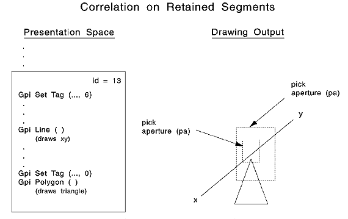
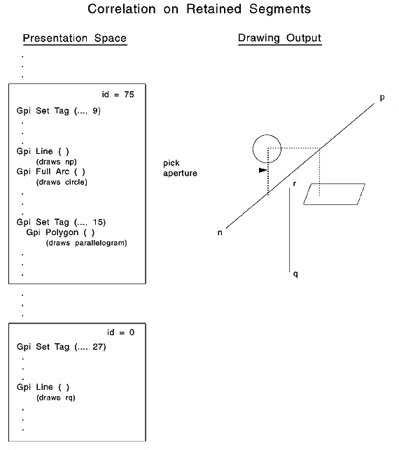
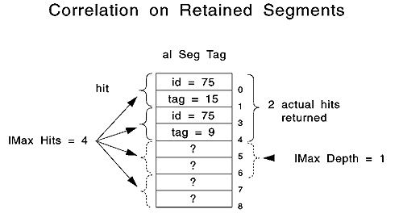

The correlation functions return the number of hits made on the retained segments. The following figure is an example of a line intersecting the pick aperture.
Retained Segment Correlation with One Hit
The intersection of a unique segment-identified and -tagged primitive with the pick aperture (pa) produces one hit. If the pick aperture size were increased, there still would be only 1 hit. The triangle produces no hit because its tag is 0.
The following figure is an example of multiple primitives intersecting the pick aperture.
Retained Segment Correlation with Multiple Hits
Four separate primitives intersect the pick aperture; however, since two primitives share the same tag, and one primitive has a segment ID of 0, there are only two hits.
Your application can set a limit on the number of hits to return from a correlation function. The maximum-number-of-hits parameter influences the size of the array created to handle the segment-tag pair returned for each hit. By comparing the maximum number desired to the actual number of hits, your application can determine whether all hits are accounted for. The following figure shows an example of the alSegTag data structure that contains the segment-tag pairs for the previous figure.
alSegTag Data Structure
As shown in the previous figure, the The identifier-tag pairs are returned to the application in the reverse order of their occurrence on the segment chain. That is, the highest priority segment is returned first. Therefore, the application can identify the topmost segment, which is the segment most likely to have been picked.